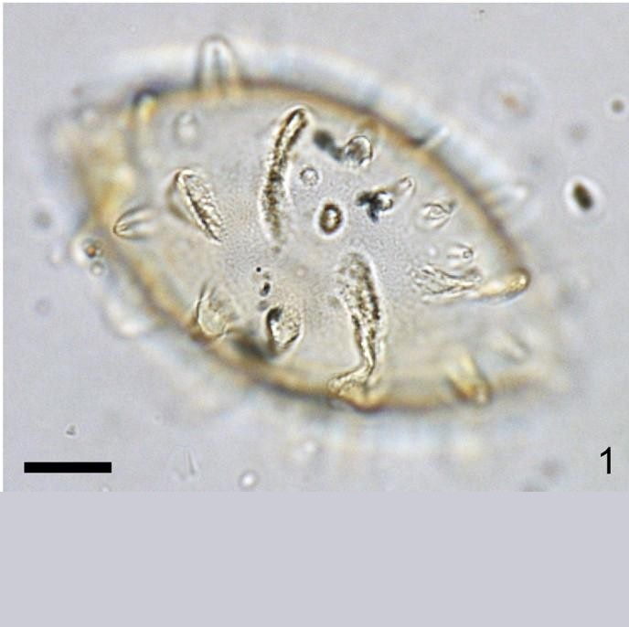
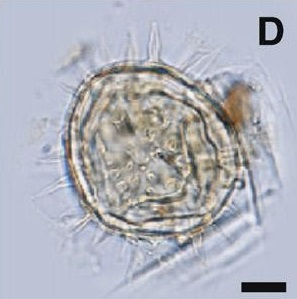

CYSTS LIST
LINGULODINIUM
Surface |
Shape |
Process |
Species |
Central body (um.) |
Process (um.) |
Image |
Thicker psilate to finely granulate inner layerThinner psilate outer layerTransparent to light yellow |
Spherical to subspherical |
Blade-shapedSmooth, nontabular, hollow, distally taperedLarge circular baseCan become bulbous towards their base |
Lingulodiniumhemicystum | 50 to 65 (D) |
5 to 13 (D) |
 |
GranulateTransparent |
Spherical |
Hollow to fibrousDistal tips closed. Can have spinulaeCircular base and terminate as pointed tipSmooth surface |
Lingulodiniummachaerophorum | 36 to 44 (D) |
2 to 21 (L) |
 |